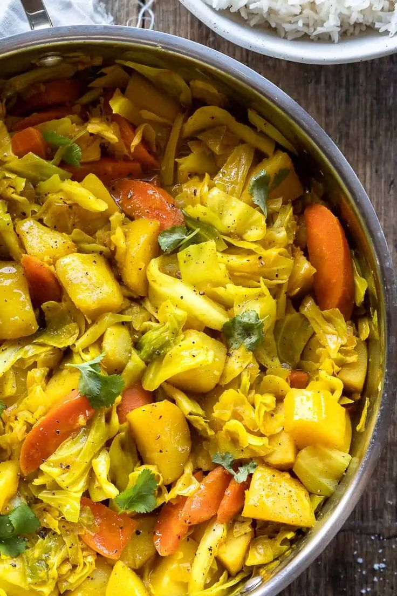

Ethiopian Cabbage Dish

Description
Ethiopian cabbage dishes, often called Atakilt Wat or Tikil Gomen, are flavorful vegetable stews featuring cabbage, potatoes, and carrots, simmered in a spiced sauce.
Ingredients
- ½ cup olive oil or niter kibbeh(clarified butter)
- 4 medium carrots, thinly sliced
- 1 medium onion, thinly sliced
- ½ head green cabbage, shredded
- 1 teaspoon sea salt
- ½ teaspoon ground black pepper
- ½ teaspoon ground cumin, or to taste
- ¼ teaspoon ground turmeric, or to taste
- ginger and garlic
- 5 medium potatoes, peeled and cut into 1-inch cubes
Steps
- Heat olive oil or niter kibbeh, a clarified butter in a pan over medium heat. Add chopped onions and sauté until softened, about 5 minutes.
- Stir in diced carrots and potatoes. Cook for a few minutes, allowing them to soften slightly.
- Add turmeric, cumin, salt, and pepper to the vegetables. You can also add ginger and garlic at this stage for extra flavor.
- Add the shredded cabbage to the pan and mix well with the other vegetables and spices.
- Cover the pan and cook over medium-low heat, stirring occasionally, until the cabbage is tender but not mushy. Add a splash of water or broth if the vegetables start to stick.
- add berbere (a spice blend) or jalapeño peppers for heat. You can also add a little more oil or butter for richness.
- Serve Cabbage Dish (the Tikil Gomen hot), often alongside injera (a spongy flatbread) and other Ethiopian dishes.